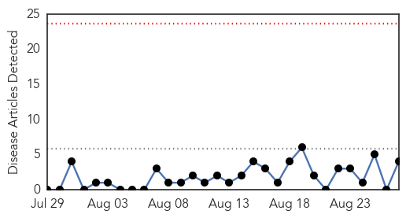
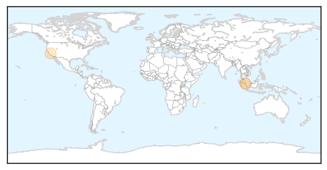
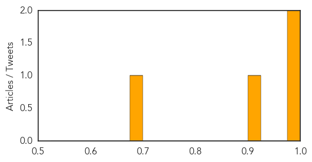

Influenza
30-Day Web Trend
0 alerts, 0 warnings

30-Day Twitter Trend
6 alerts, 0 warnings

Article Locations

Article Confidences

Top Articles:
Top Tweets:
- 0.961
- Influenza H1N1 Virus Gene Replikins Found Conserved and Shared in Current Flu Strains Back to 1918 http://t.co/n44vF2aBX3
- 0.846
- Alcoholics have an abnormal CD8 T cell response to the influenza virus http://t.co/wNQVBYYFDv via flu
Measles
30-Day Web Trend
0 alerts, 0 warnings

30-Day Twitter Trend
0 alerts, 0 warnings

Article Locations
Article Confidences
Top Articles:
Top Tweets:
-
No tweets found for Aug 27, 2014